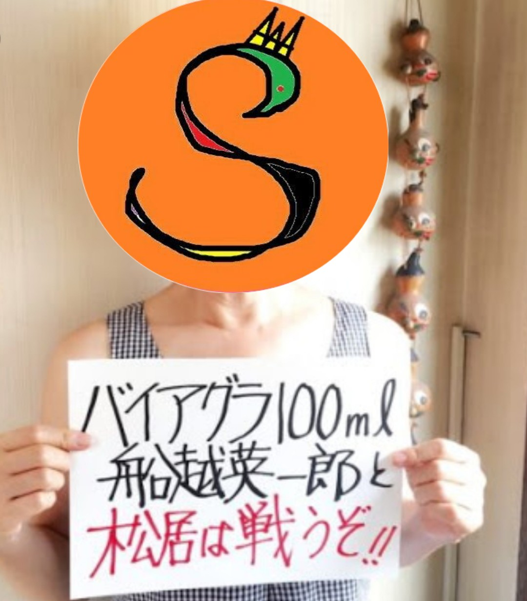
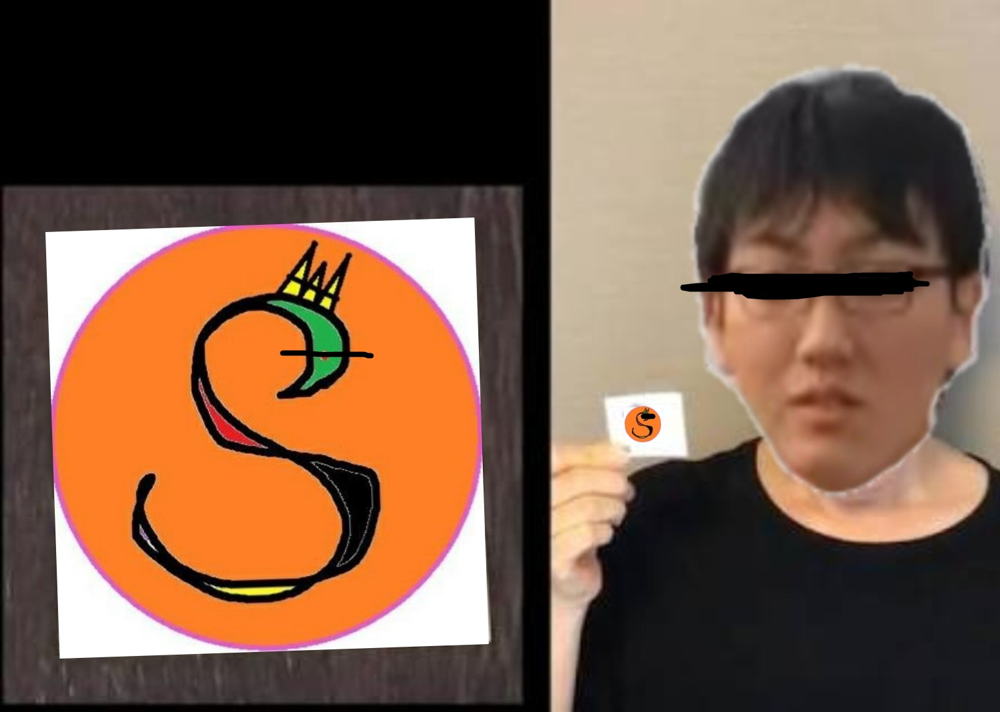

ようこそ、SARAtntv.netへ。
このサイトには、非常に珍しいシールがありました。。。見たこともない、特殊なシールでした。。。お見せしましょう。。。
このシールです。。。このシールは、、、汚珍珍シールですって。。。ﾌﾌッ。。。
ここはSARAやSARAリスナーのためのサイトであります。
SARAについて
SARAはYouTubeにて活動を行う方。人をdisって笑いをとるスタイル。
年齢は自称１３歳だが、過去のライブ配信にて１４歳や１７歳や、様々な年齢を答えており、詳しな年齢はハッキリしていない。
性別は女。アメリカ生まれの日本育ちで、日本に移住したのが2016年７月。ライブを始めたきっかけはインフルエンザで闘病中に
暇でありライブを始めたと本人が話している。学校はアメリカで飛び級をしたため、現在は卒業済。日本語が流暢で、その他英語、中国語、ラテン語、タガログ語が得意らしい。
現在はパソコンに入り、猫に成り変わったり人間のアバターに成り変わったりしているため、誰がSARAであるか見分けられない。
鯖語講座